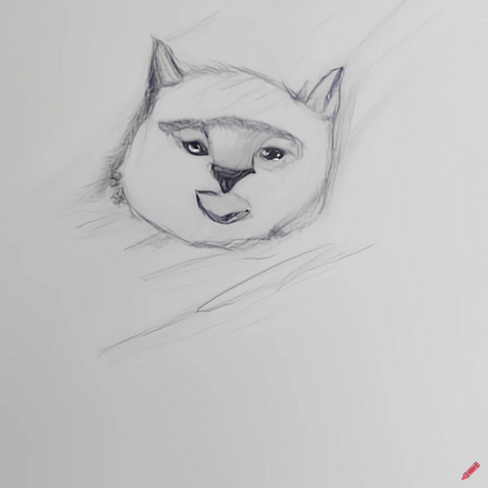

Die Nerd Enzyklopädie 18 - Willkommen auf Null Island
Die geografischen Koordinaten 0° Nord und 0° Ost zeigen auf einem Punkt im Atlantik vor der West-Küste Afrikas. Eigentlich gibt es dort nicht viel zu sehen, außer Wasser, noch mehr Wasser, ganz viel Wasser, ab und zu mal ein Fisch und natürlich die PIRATA-Boje.

Bei dieser Ortsangabe handelt es sich nämlich um eine Art Hilfsmittel, um Fehler in geografischen Systemen, Datenbanken oder Programmen abzufangen. Da Null für das Fehlen von Daten oder auch die fehlerhafte Rückmeldung eines Programmes stehen kann, führt ein Problem bei der Verarbeitung geografischer Daten eben zu Null — also 0 und damit zu der Koordinate 0 Grad Nord und 0 Grad Ost.
Seit 2011 hat sich eine kleine Fan-Gemeinde der Aufgabe unterworfen, an diesem Ort der fiktiven Insel Null Island ein Gesicht zu geben. So erschuf man unter anderem eine Flagge, geografische Informationen und sogar eine eigene Sprache für Null Island.
Tatsächlich passiert auf dieser nicht existierenden Insel sehr viel: Jedes Mal wenn es in irgendeiner Software zu Problemen mit Ortsangaben kommt, werden die restlichen Daten Null Island zugeordnet. Deine Fitness-App hatte keine Verbindung zu den GPS-Satelliten? Dann verläuft die Fahrrad-Route jetzt wohl über Null Island. Beim Fotografieren stand kein GPS- Signal zur Verfügung? Dann wurde das Foto wohl auf Null Island gemacht! Und damit dürfte Null Island wohl einer der belebtesten Orte auf diesem Planeten sein.